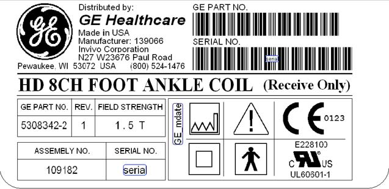
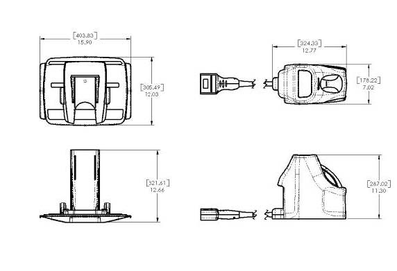
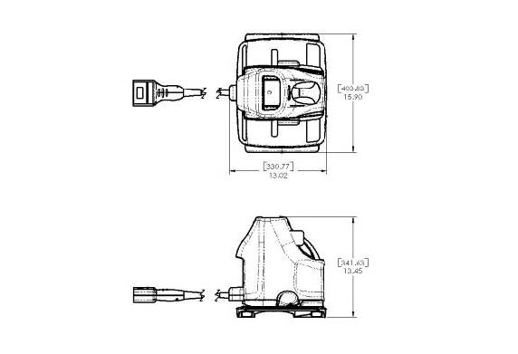
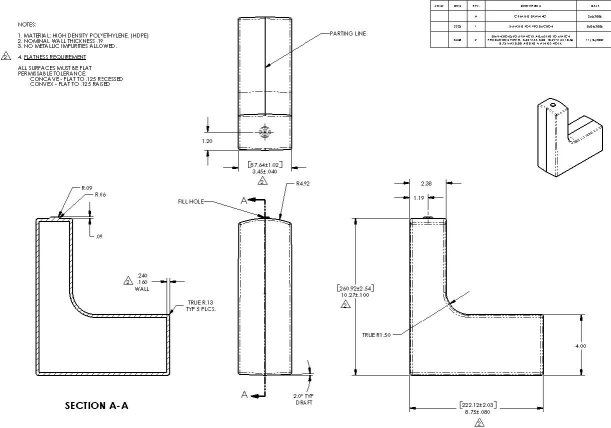

- 00000018WIA30121F20GYZ
- id_131070253.0
- Aug 29, 2019 5:57:26 AM
1.5T HD 8-Channel Foot Ankle Coil Introduction
Product Identification and Shipping List
Identify the 1.5T HD 8-Channel Foot Ankle Coil by the coil label.

The 1.5T HD 8-Channel Foot Ankle Coil (M3340CD) by Invivo is shown below.

This table provides a the list of items shipped with the 1.5T HD 8-Channel Foot Ankle Coil.
| Description | GE Part Number | Invivo Part Number | Quantity |
| 1.5T HD 8-Channel Foot Ankle Coil with Cable (Electrical Assembly) | 5308342-2 | 109182 | 1 |
| Operator Manual | 5308342-4 | 4535-302-19871 | 1 |
| HD 8-Channel FAC Baseplate Assembly | 5273235-6 | 4535-300-70381 | 1 |
| HD FAC Ankle Pad | 5273235-7 | 4535-300-67681 | 1 |
| HD FAC Ramp Pad | 5273235-8 | 4535-300-61081 | 1 |
| HD FAC Foot Pad | 5273235-9 | 4535-300-61091 | 1 |
Coils do not ship with phantoms. Phantoms come in a unified phantom set with the MR system.
Related Documentation
1.5T HD 8-Channel Foot Ankle Coil Operator Manual, Direction 5308342-4.
Environmental Requirements
This equipment must be stored under the following conditions:
-
Ambient temperature range of +10° to +40°C.
-
Relative humidity range of 10% to 90%, noncondensing.
-
Atmospheric pressure range of 500 to 1,060 hPa.
Storage Requirements: To store the coil and baseplate, a storage space greater than 40.4 cm (width) x 30.6 cm (length) x 34.1 cm (height), 15.9 in. x 12.0 in. x 13.5 in. is required.
| Coil: | 17.8 cm x 32.4 cm x 28.7 cm | 12.8 in. x 7.0 in. x 11.3 in. |
| Phantom: | 8.76 cm x 22.2 cm x 26.1 cm | 3.45 in. x 8.75 in. x 10.3 in. |
| Baseplate | 40.4 cm x 30.5 cm x 32.2 cm | 15.9 in. x 12.0 in. x 12.7 in. |
| Coil with Cable: | 3.70 kg | 8.15 lb |
| Phantom: | 2.83 kg | 6.25 lb |
| Baseplate: | 2.77 kg | 6.10 lb |
The images below show more detailed dimensions of the 1.5T HD 8-Channel Foot Ankle Coil.


